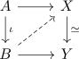

weak equivalence and lift against CW complexes up to homotopy
Proposition
Let $\iota: A \rightarrow B$ be a continuous map between CW-Complexes, $f: X \rightarrow Y$ a weak homotopy equivalence Then any lifting problem

admits a compatible lift up to homotopy
? where the diagram commutes up to a specified homtopy admits a compatible lift up to homotopy
Proof
using the general whitehead theorem we get
hence we may take a representative in $[B,X]$ which corresponds to the map $B \rightarrow Y$. Then applying $f_*$ results in the same homotopy class, i.e. we may choose a homotopy from $B \rightarrow X \rightarrow Y$ to $B \rightarrow Y$
Furthermore the homotopy class of
- $A \rightarrow X \rightarrow Y$
- $A \rightarrow B \rightarrow Y$
- $A \rightarrow B \rightarrow X \rightarrow Y$
are the same.
Hence since postcomposition with $f: X \rightarrow Y$ is an iso on homotopoy classes, we may conclude that
- $A \rightarrow X$
- $A \rightarrow B \rightarrow X$
represent the same equivalence class.
Thus we may choose a homotopy from $A \rightarrow X$ to $A \rightarrow B \rightarrow X$
currently: missing up to a specified homotopy ? use similar argument for $A \times [0,1], B \times [0,1]$ is it correct ?